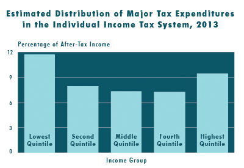
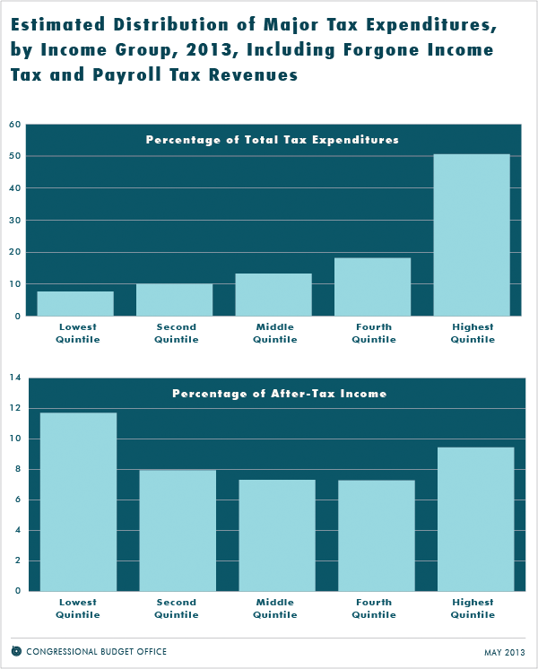

The Distribution of Major Tax Expenditures in the Individual Income Tax System

In 2013, the benefits of 10 of the largest tax expenditures will equal 11.7 percent of income for households in the lowest income quintile, 9.4 percent for the highest quintile, and under 8 percent for the middle quintiles, CBO estimates.
Summary
A number of exclusions, deductions, preferential rates, and credits in the federal tax system cause revenues to be much lower than they would be otherwise for any given structure of tax rates. Some of those provisions—in both the individual and corporate income tax systems—are termed “tax expenditures” because they resemble federal spending by providing financial assistance to specific activities, entities, or groups of people. Tax expenditures, like traditional forms of federal spending, contribute to the federal budget deficit; influence how people work, save, and invest; and affect the distribution of income.
This report examines how 10 of the largest tax expenditures in the individual income tax system in 2013 are distributed among households with different amounts of income. Those expenditures are grouped into four categories:
- Exclusions from taxable income—
- Employer-sponsored health insurance,
- Net pension contributions and earnings,
- Capital gains on assets transferred at death, and
- A portion of Social Security and Railroad Retirement benefits;
- Itemized deductions—
- Certain taxes paid to state and local governments,
- Mortgage interest payments, and
- Charitable contributions;
- Preferential tax rates on capital gains and dividends; and
- Tax credits—
- The earned income tax credit, and
- The child tax credit.
Some of the provisions of law that reduce the amount of taxable income under the individual income tax also decrease the amount of earnings subject to payroll taxes. The figures presented in this report are generally based on the reduction in payroll taxes as well as the reduction in income taxes, but some figures separate those two effects. (Provisions that reduce payroll tax receipts generally reduce future Social Security benefits as well; that effect is not analyzed in this report.)
How Do Tax Expenditures Affect the Federal Budget?
Although the 10 major tax expenditures listed here represent a small fraction of the more than 200 tax expenditures in the individual and corporate income tax systems, they will account for roughly two-thirds of the total budgetary effects of all tax expenditures in fiscal year 2013, CBO estimates. Together, those 10 tax expenditures are estimated to total more than $900 billion, or 5.7 percent of gross domestic product (GDP), in fiscal year 2013 and are projected to amount to nearly $12 trillion, or 5.4 percent of GDP, over the 2014–2023 period. In addition, tax credits to subsidize premiums for health insurance provided through new exchanges to be established under the Affordable Care Act will represent a new tax expenditure beginning in 2014, estimated to equal 0.4 percent of GDP over the 2014–2023 period.
How Are Tax Expenditures Distributed Among Households?
The 10 major tax expenditures considered here are distributed unevenly across the income scale. In calendar year 2013, more than half of the combined benefits of those tax expenditures will accrue to households with income in the highest quintile (or one-fifth) of the population (with 17 percent going to households in the top 1 percent of the population), CBO estimates. In contrast, 13 percent of those tax expenditures will accrue to households in the middle quintile, and only 8 percent will accrue to households in the lowest quintile (see the top panel of the figure below).

When measured relative to after-tax income, those 10 major tax expenditures are largest for the lowest and highest income quintiles. In calendar year 2013, CBO estimates, the combined benefits will equal nearly 12 percent of after-tax income for households in the lowest income quintile, more than 9 percent for households in the highest quintile, and less than 8 percent for households in the middle three quintiles (see the bottom panel of the figure above).
The distribution of tax expenditures across the income scale varies considerably among the different tax expenditures. For example, CBO estimates that more than 90 percent of the benefits of reduced tax rates on capital gains and dividends will accrue to households in the highest income quintile in 2013, with almost 70 percent going to households in the top percentile. Those benefits will equal 2 percent of after-tax income for the highest quintile and 5 percent of after-tax income for households in the top percentile. In contrast, about half of the benefits of the earned income tax credit will accrue to households in the lowest income quintile, equaling 6 percent of after-tax income for households in that group.
Tax credits that will provide assistance in paying premiums in health insurance exchanges are excluded from the distributional results presented here because they are not in effect in 2013. When those tax credits come into effect, they will appreciably increase tax expenditures for households in the lower and middle income quintiles. Individuals and families who have income between 100 percent and 400 percent of the federal poverty guidelines and who meet certain other requirements will be eligible for those credits.
How Do Tax Expenditure Estimates Differ From Revenue Estimates?
Estimates of tax expenditures are traditionally intended to measure the difference between households’ tax liabilities under present law and the tax liabilities they would have incurred if the provisions generating those tax expenditures were repealed but households’ behavior was unchanged. Such estimates do not represent the amount of revenues that would be raised if those provisions were eliminated, because the changes in incentives that would result from eliminating those provisions would lead households to modify their behavior in ways that would mute the impact on revenues. For example, if the preferential tax rates on capital gains realizations were eliminated, taxpayers would reduce the amount of capital gains they realized. Because the size of that tax expenditure is estimated on the basis of the gains that are projected to be realized with the preferential rates in place, the amount of additional revenues that would be received if those preferences were eliminated would be smaller than the reported tax expenditure.